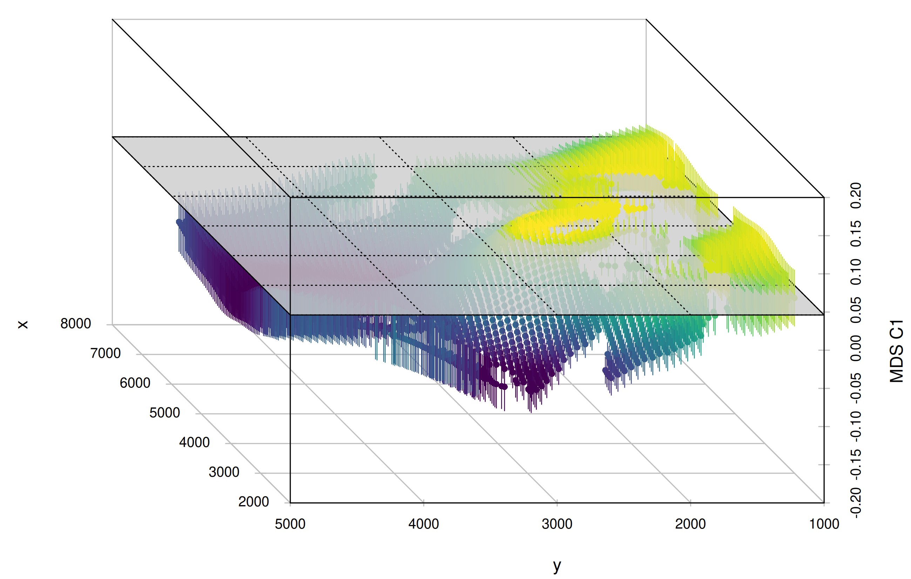

6 mobest - Spatiotemporal Ancestry Interpolation and Search
The practical parts Section 6.2 and Section 6.3 of the following introduction are a slightly adjusted version of two sections of the mobest documentation available at https://nevrome.de/mobest. More advanced topics beyond the most basic usecase are also introduced there.
6.1 Overview
mobest is an R package providing types and functions for spatiotemporal interpolation of human genetic ancestry components, probabilistic similarity search and the calculation of a derived measure of ancestry relocation and mobility. The workflow in mobest version 1.0.0 was specifically developed for Schmid and Schiffels (2023).
mobest assumes you have a set of genetic samples with spatial (two coordinates in a projected reference system) and temporal positions (years BC/AD) for which you calculated a derived, numeric measure of genetic ancestry (e.g. coordinates in a PCA or MDS space).


The package then provides functions to perform spatiotemporal interpolation using Gaussian process regression (GPR, “kriging”) with the laGP R package (Gramacy (2016)) to reconstruct an ancestry field based on the ancestry measure you provided.


mobest finally allows to derive a similarity likelihood for samples of interest within the interpolated field, which – under certain circumstances – can be interpreted as an origin probability.


The Stuttgart sample used for illustrative purposes here was taken from an Early Neolithic individual from Southern Germany and first published in Lazaridis et al. (2014).
6.2 Installing mobest
mobest is an R package and can be installed directly from GitHub with the following code on the R console:
if(!require('remotes')) install.packages('remotes')
remotes::install_github('nevrome/mobest')You can also install specific/older versions of mobest with the following syntax: nevrome/mobest[@ref|#pull|@*release]. For example to install the publication release version you can run remotes::install_github('nevrome/mobest@1.0.0').
For any of this to work a number of system libraries (mostly for processing geospatial data) have to be installed on your system, primarily for one particular dependency of mobest: the sf R package (Pebesma (2018)). The following table includes the libraries and the names of the relevant packages in the package management systems of various Linux distributions and MacOS.
| System library | deb package (Ubuntu/Debian) |
rpm package (Fedora/CentOS) |
pkgbuild package (Arch) |
brew package (MacOS) |
|---|---|---|---|---|
| GDAL | libgdal-dev | gdal | gdal | gdal |
| GEOS | libgeos-dev libgeos++-dev |
geos-devel | geos | geos |
| PROJ | libproj-dev | proj-devel sqlite-devel |
proj | proj |
| UDUNITS-2 | libudunits2-dev | udunits | udunits | udunits |
The sf package maintainers provide a good explanation how to install these: https://r-spatial.github.io/sf/#installing
6.3 A basic similarity search workflow
This section explains the setup for a basic ancestry similarity search with mobest in R.
For didactic purposes we use a simplified version of the data and code generated for the publication that introduced mobest: Schmid and Schiffels (2023) . This is a fairly generic setup you can adjust to the needs of other and more specific projects.
The script explained in the following sections as well as the data required for it can be downloaded in its entirety here:
6.3.1 Preparing the computational environment
For this script we use various packages beyond base R, among which the following ones are required:
readrfor loading .csv input datamagrittrfor the pipe operator%>%sffor loading and manipulating spatial datarnaturalearthfor downloading spatial reference data (Massicotte and South (2024))ggplot2(andcowplot) to visualize intermediate and final results (Wilke (2024))dplyrfor data manipulation ofdata.framesmobest(obviously)
readr, magrittr, ggplot2 and dplyr are all in the tidyverse (Wickham et al. (2019)) and can be installed in one go with install.packages("tidyverse") on the R console. For the installation of sf and mobest please see the instructions above.
We will generally call functions explicitly with their namespace using :: (so e.g. readr::read_csv()). The only exceptions are magrittr and ggplot2, because we will use their functions so often that it becomes tedious to type them out. Instead we load them at the beginning.
library(magrittr)
library(ggplot2)6.3.2 Preparing the input data
6.3.2.1 Generating the the spatial prediction grid
mobest’s similarity search is typically run for a regular grid of spatial positions in the area of interest. It provides a function, mobest::create_prediction_grid(), to create such a grid, given a specification of the desired area. This area is typically the land area in a certain part of planet Earth.
6.3.2.1.1 Defining the research area
In a first step we therefore have to define the research area for our analysis as a polygon in space. One way of doing so is to provide a list of latitude and longitude coordinates (extracted e.g. from Google Maps). The following code defines a simple research area covering large parts of Western Eurasia.
research_area_4326 <- sf::st_polygon(
list(
cbind(
c(35.91,11.73,-11.74,-15.47,
37.06,49.26,49.56,35.91), # longitudes
c(25.61,28.94,31.77, 62.73,
65.67,44.56,28.55,25.61) # latitudes
)
)
) %>% sf::st_sfc(crs = 4326)Spatial coordinates require a coordinate references system (CRS). For lat-lon coordinates we typically use WGS84 with the EPSG code 4326. st_polygon() creates a simple polygon as a clockwise arrangement of individual coordinates and st_sfc() properly defines this polygon as a geographic area on Earth.
A simple way to interactively inspect this polygon on a world map in R is provided by the mapview package (Appelhans et al. (2023)): mapview::mapview(research_area_4326).

With the research area properly defined we can move to the next challenge and extract the land area in the research area. For that we have to obtain a dataset with polygons that trace the world’s coastlines. The naturalearthdata project provides open worldwide geodata in different resolutions and in easy to use data formats.
The rnaturalearth package makes it easy to download this data right into sf objects in R.
worldwide_land_outline_4326 <- rnaturalearth::ne_download(
scale = 50, type = 'land', category = 'physical',
returnclass = "sf"
)We can then crop the land outline to the research area to obtain the land area we are interested in.
research_land_outline_4326 <- sf::st_intersection(
worldwide_land_outline_4326,
research_area_4326
)Using ggplot2, we can finally plot the resulting spatial multi-polygon.
ggplot() + geom_sf(data = research_land_outline_4326)
6.3.2.1.2 Projecting the spatial data
At this point we run into a specific issue of mobest: It requires its “independent” spatial and temporal coordinates to be coordinates in a Cartesian system describing Euclidean space.
For the spatial coordinates that means we can not work with latitude and longitude coordinates on a sphere, but have to transform them. We have to apply map projection to represent the curved, two dimensional surface of our planet on a simple plane.
The question how exactly this should be done and which CRS to choose depends on the position, size and shape of the research area. Each map projection algorithm has different properties regarding whether they manage to preserve or distort size, shape, distances and directions of areas and lines compared to the actual circumstances on Earth. Generally the larger the research area the bigger the distortion of these properties becomes.
But for mobest we ideally want to represent all them accurately. mobest is therefore unfit for origin search on a global scale, but can usually be well applied for individual countries with the projections recommended by their cartographic agencies. For an intermediate, continental scale, as in this example, we have to choose our CRS wisely.
We decided to follow the recommendation of Annoni et al. (2003) and chose ETRS89 Lambert Azimuthal Equal Area coordinate reference system as in EPSG code 3035.
Our decision comes at the price of increased inaccuracy especially in the North- and South-East of the research area where we get very far away from the specified centre for EPSG:3035 at 52° latitude and 10° longitude (see Tsoulos (2003) p.53 for a visualization of the deformative effects).
To transform the land outline in the research area from EPSG:4326 to EPSG:3035 we can apply sf::st_transform().
research_land_outline_3035 <- research_land_outline_4326 %>%
sf::st_transform(crs = 3035)Note how the change in the coordinate system affects the map plot.
ggplot() + geom_sf(data = research_land_outline_3035)
6.3.2.1.3 Creating the prediction grid
To finally create the prediction grid we can use mobest::create_prediction_grid(). It takes the land outline polygon and overlays its bounding box with a regular grid (using sf::st_make_grid()), where each cell has the size corresponding to the spatial_cell_size parameter. It then determines the centres of each grid cell and crops the resulting, regular point cloud with the land area.
Note that spatial_cell_size uses the unit of the CRS, so in our case for EPSG:3035 meters. That means a value of 50000 translates to one point every 50km.
spatial_pred_grid <- mobest::create_prediction_grid(
research_land_outline_3035,
spatial_cell_size = 50000
)The total number of resulting spatial prediction positions is 4738 in this example.
create_prediction_grid returns an object of class mobest_spatialpositions, which is derived from tibble::tibble(). That means we can print it on the R console and it will behave as a tibble. It will also work seamlessly as an input for ggplot2, which we can now use to visualize the point cloud.
ggplot() +
geom_sf(data = research_land_outline_3035) +
geom_point(
data = spatial_pred_grid,
mapping = aes(x, y),
color = "red",
size = 0.25
)
6.3.2.2 Reading the input samples
mobest requires a set of data points, archaeogenetic samples, to inform the ancestry field interpolation. For each sample the position in space, time and a dependent variable space (e.g. the coordinates in a PCA analysis) must be known. This information must be provided in a specific format. A typical mobest workflow involves preparing a sample list in a .xlsx or .csv table, which could then be read into R and transformed to the correct format.
For this tutorial we rely on the data used and published in Schmid and Schiffels (2023). You can download a simplified version of this dataset here (samples_basic.csv) and load it into R.
samples_basic <- readr::read_csv("path/to/your/downloaded/samples_basic.csv")samples_basic includes the following columns/variables:
| Column | Type | Description |
|---|---|---|
| Sample_ID | chr | A sample identifier |
| Latitude | dbl | The latitude coordinate where this sample was recovered |
| Longitude | dbl | The longitude coordinate |
| Date_BC_AD_Median | int | The median age of this sample in years BC/AD (negative numbers for BC, positive ones for AD) |
| MDS_C1 | dbl | The coordinate of this sample on dimension 1 of an MDS analysis. See Schmid and Schiffels (2023) for more details on how this was obtained |
| MDS_C2 | dbl | The coordinate of this sample on MDS dimension 2 |
These variables are a minimum for a meaningful mobest run and must be known for all samples. Samples with missing information in any of these columns have to excluded from the input.
Just as for the research area we have to transform the coordinates from longitude and latitude coordinates to a projected system, specifically the same as the one we selected above. To do this we can construct an sf object from the sample table, apply sf::st_transform() and then transform this result back to a tibble with the x and y coordinates of EPSG:3035 in extra columns. This last step makes the code a bit awkward.
samples_projected <- samples_basic %>%
# make the tibble an sf object
sf::st_as_sf(
coords = c("Longitude", "Latitude"),
crs = 4326
) %>%
# transform the coordinates
sf::st_transform(crs = 3035) %>%
# reshape the sf object back into a simple tibble
dplyr::mutate(
x = sf::st_coordinates(.)[,1],
y = sf::st_coordinates(.)[,2]
) %>%
sf::st_drop_geometry()With the coordinates in the same reference system as the landmass polygons we prepared above we can now combine both in a single figure:
ggplot() +
geom_sf(data = research_land_outline_3035) +
geom_point(
data = samples_projected,
mapping = aes(x, y),
color = "darkgreen",
size = 0.25
)
A number of samples are outside of the area we want to predict here. That is no problem. They will inform the field in the north-eastern fringes of the area and do no harm. It is much more problematic that some zones within our research area are severely under-sampled. We have to keep sampling gaps like this in mind when we interpret the results of the similarity search.
6.3.3 Specifying the search sample
mobest’s similarity search usually takes the perspective of an individual sample for which we want to determine similarity probabilities for a spatial prediction grid at a specific point in time. For this sample, the “search sample”, we require the same information as for the input samples: The position in space, time and the dependent variable space (e.g. PCA or MDS space).
Technically this is only a requirement of the mobest interface. Conceptually such a similarity search only really requires the dependent variable space position of interest. The added benefit of having all information there is the relative time search setting (see below) and a very comprehensive output table for the most common use-case.
In this example we will locate one specific sample with a pretty well studied ancestry history: The sample named Stuttgart published in Lazaridis et al. (2014). We can select it as a subset of our sample table:
search_samples <- samples_projected %>%
dplyr::filter(
Sample_ID == "Stuttgart_published.DG"
)With this setup the search sample itself will be part of the samples used to inform the ancestry field interpolation (samples_projected). This is no problem - the search sample is a known data point in space and time that can very well be employed to build a better model of the past ancestry distribution. There may be research questions for which this might not be desired, though. Then it can just as well be excluded from the samples_projected table.
6.3.4 Running mobest’s interpolation and search function
With the input data, both the spatial prediction grid and the samples to inform the ancestry field interpolation, prepared and ready, we can now run mobest::locate(). For that we first have to split and transform the input into the required data structures.
6.3.4.1 Building the input data for the interpolation
Here is how the interface of mobest::locate() looks:
mobest::locate(
# spatiotemporal coordinates of the reference samples
# informing the ancestry field
independent = ...,
# genetic coordinates of the reference samples
dependent = ...,
# ---
# interpolation settings for each ancestry component
kernel = ...,
# ---
# spatiotemporal coordinates of the sample of interest
search_independent = ...,
# genetic coordinates of the sample of interest
search_dependent = ...,
# ---
# spatial search grid: where to search
search_space_grid = ...,
# search time: when to search
search_time = ...,
search_time_mode = ...,
# ---
# should the result be normalized
normalize = ...
)Each of these arguments requires specific input.
6.3.4.1.1 Independent and dependent positions
The locest() arguments independent and dependent take the spatiotemporal and genetic (as for example derived from MDS/PCA) positions of the interpolation-informing samples. The terms independent and dependent allude to the notion and terminology of a statistical model, where positions in dependent, genetic space are predicted based on positions in independent, spatiotemporal space.
Spatiotemporal positions are encoded in mobest with a custom data type: mobest_spatiotemporalpositions. For the independent argument of locest() we have to construct an object of this type with mobest::create_spatpos() to represent the positions of the input samples in samples_projected.
ind <- mobest::create_spatpos(
id = samples_projected$Sample_ID,
x = samples_projected$x,
y = samples_projected$y,
z = samples_projected$Date_BC_AD_Median
)The dependent, genetic variables are also encoded in a custom, tabular type: mobest_observations with the constructor function mobest::create_observations().
dep <- mobest::create_obs(
C1 = samples_projected$MDS_C1,
C2 = samples_projected$MDS_C2
)Note that you can have an arbitrary number of these components with arbitrary names. The only condition is, that the very same set and names are used below for the search samples and for the kernel parameter settings of each dependent variable.
The lengths of the vectors (samples_projected$...) used for create_spatpos() and create_obs() all have to be identical. And their order has to be the same as well: Although the input is distributed over two constructors they describe the same samples.
For the search sample in search_samples, finally, we have to construct objects of the same type and structure:
search_ind <- mobest::create_spatpos(
id = search_samples$Sample_ID,
x = search_samples$x,
y = search_samples$y,
z = search_samples$Date_BC_AD_Median
)
search_dep <- mobest::create_obs(
C1 = search_samples$MDS_C1,
C2 = search_samples$MDS_C2
)6.3.4.1.2 Kernel parameter settings
The locest() argument kernel takes an object of the class mobest_kernelsetting. This type encodes kernel configurations for each dependent variable, so the parameters for the Gaussian process regression (GPR) interpolation that should be used for this variable. These include mostly the lengthscale parameters in space (x and y) and time, as well as the nugget parameter (Gramacy (2020), specifically here). In very simple terms:
- Lengthscale parameters: How far in space and time should an individual sample’s genetic position inform the interpolated field.
- Nugget: Error term to model local variability of the dependent variable, so for observations from the same position in space and time.
Here is a possible kernel configuration for our example. We construct two kernel settings, one for each ancestry component, with mobest::create_kernel() in mobest::create_kernset().
kernset <- mobest::create_kernset(
C1 = mobest::create_kernel(
dsx = 800 * 1000, dsy = 800 * 1000, dt = 800,
g = 0.1
),
C2 = mobest::create_kernel(
dsx = 800 * 1000, dsy = 800 * 1000, dt = 800,
g = 0.1
)
)Note how we scale the lengthscale parameters: dsx and dsy are set in meters (800 * 1000m = 800km) and dt in years (800y). g is dimensionless. With the setting specified here both dependent variables will be interpolated with the same, very smooth (several hundred kilometres and years in diameter) kernel.
The main question naturally arising from this, is how to set these parameters for a given dataset and research question. There are various empirical ways to find optimal values through numerical optimization. See Supplementary Text 2 of Schmid and Schiffels (2023) and the mobest documentation for the approaches we applied.
While estimating the nugget is generally advisable, we would argue, that the computationally expensive crossvalidation workflow to estimate the lengthscale parameters is not always necessary for basic applications of mobest.
The analysis in Schmid and Schiffels (2023) showed that Gaussian process regression returns reasonably accurate interpolation results for a large range of kernel parameter settings, as long as they reflect a plausible intuition about the mobility behaviour of human ancestry, which generally operates on a scale of hundreds of kilometres and years.
mobest is primarily a visualization method and adjusting its parameters to ones liking is legitimate if the choices are communicated transparently.
6.3.4.1.3 Search positions
With input data and settings out of the way we can now specify the points in space and time where we actually want to perform the search. For these positions the GPR model is queried to return a mean and error, which are in turn used to calculate the probability density of a specific dependent variable space position, e.g. a specific coordinate on the first coordinate of an MDS analysis.
We already performed all necessary work for the search_space_grid argument, so the spatial positions of the prediction grid. We can just enter spatial_pred_grid here.
The search time can be specified as an integer vector of years: e.g. search_time = c(-500, -200, 100). This vector gets interpreted by mobest::locate() in two different ways, which can be selected with the switch argument search_time_mode. search_time_mode can either be "relative" (which is the default!) or absolute.
"relative": Thesearch_timeis interpreted as a \(\Delta t\) relative to the age of the search sample(s). Negative values point to ages that are older then the sample age, so in their relative past, and positive ones to younger ages in their relative future. In this example-500would be interpreted as 500 years prior to the year the Stuttgart sample presumably died (so -5242-500 = -5742 BC/AD), and 100 as an age 100 years after their death (so -5242+100 = -5142 BC/AD)."absolute": The values insearch_timeare simply interpreted as absolute ages in years BC/AD.
For this example we will set the search time to an "absolute" value.
search_time = -6800
search_time_mode = "absolute"This will search at exactly one point in time; a single timeslice 6800 BC.
6.3.4.1.4 Normalization
The last relevant option of locate(), normalize, concerns the normalization of the output. mobest’s search calculates likelihoods for each search point. This is a dimensionless measure that is hard to compare across multiple runs with different parameter settings. If normalize is set to TRUE, then the densities for sets of spatial points that share all other parameters (including the timeslice) are rescaled to a sum of one, so to proper probabilities.
We assume users generally want to use mobest, specifically locate(), to calculate similarity probability density maps for individual samples, time slices and parameter settings. The most natural normalization for this case is to unify the scaling of these maps. This renders them comparable. normalize should therefore be set to TRUE for basic applications. This is also encoded as the the default setting.
6.3.4.2 Calling mobest::locate()
In the previous sections we have thoroughly prepared the input for a first, simple run of mobest::locate(). We can now finally call the function.
search_result <- mobest::locate(
independent = ind,
dependent = dep,
kernel = kernset,
search_independent = search_ind,
search_dependent = search_dep,
search_space_grid = spatial_pred_grid,
search_time = -6800,
search_time_mode = "absolute"
)This typically runs for a couple of seconds, uses every available processor core and returns an object search_result, which we will inspect below.
6.3.5 Inspecting the computed results
mobest::locate() returns an object of class mobest_locateoverview. It includes the relevant information for visualization and further processing of the analysis results.
6.3.5.1 The mobest_locateoverview table
mobest_locateoverview is derived from tibble and has a large set of columns, many not immediately relevant to the basic example here. This applies especially for the variables documenting the excessive permutation mechanics hidden behind the relatively simple interface of mobest::locate(). locate() is, in fact, a wrapper function for the more flexible function mobest::locate_multi(), which can handle permutations in various additional input parameters.
Each row of the mobest_locateoverview table stores the calculated interpolated mean, error and similarity probability (field_mean, field_sd, probability) for one permutation of the input point positions in independent and dependent variable space (independent_table_id and dependent_setting_id), one dependent variable dependent_var_id, one iteration of the kernel settings (kernel_setting_id: dsx, dsy, dt, g), one prediction grid point emerging as a combination of spatial grid and search timeslice (pred_grid_id: field_id, field_geo_id, field_x, field_y, field_z, search_time) and finally one search sample (search_id, search_x, search_y, search_z, search_measured).
Here is a list of the variables returned in mobest_locateoverview for each of these result iterations.
| Column | Description |
|---|---|
| independent_table_id | Identifier of the spatiotemporal position permutation |
| dependent_setting_id | Identifier of the dependent variable space position permutation |
| dependent_var_id | Identifier of the dependent variable |
| kernel_setting_id | Identifier of the kernel setting permutation |
| pred_grid_id | Identifier of the spatiotemporal prediction grid |
| dsx | Kernel lengthscale parameter on the spatial x axis |
| dsy | Kernel lengthscale parameter on the spatial y axis |
| dt | Kernel lengthscale parameter on the temporal axis |
| g | Kernel nugget parameter |
| field_id | Identifier of the spatiotemporal prediction point |
| field_x | Spatial x axis coordinate of the prediction point |
| field_y | Spatial y axis coordinate of the prediction point |
| field_z | Temporal coordinate (age) of the prediction point |
| field_geo_id | Identifier of the spatial prediction point |
| field_mean | Mean value predicted by the GPR model for the dependent variable |
| field_sd | Error term predicted by the GPR model for the dependent variable |
| search_id | Identifier of the search sample |
| search_x | Spatial x axis coordinate of the search sample |
| search_y | Spatial y axis coordinate of the search sample |
| search_z | Temporal coordinate (age) of the search sample |
| search_time | Search time as provided by the user in locate()’s search_time argument |
| search_measured | Genetic coordinate of the search sample in the dependent variable space |
| probability | Probability density for search_measured given all other parameters |
As a result of the permutation of parameters, the size of the prediction grid and the number of search points, the number of rows in a mobest_locateoverview table can be calculated as a product of the individual counts of all relevant entities. One way to quickly validate the output of locate() and locate_multi() is to calculate the number of expected results based on the input and compare it with the actual number of rows in the output. For our example this calculation is fairly simple:
We have:
- \(1\) set of input point positions in independent variable space (
independent_table_id) - \(1\) set of input point positions in dependent variable space (
dependent_setting_id) - \(2\) dependent variables (
dependent_var_id) - \(1\) set of kernel parameter settings (
kernel_setting_id) - \(4738\) spatial prediction grid positions
- \(1\) time slice of interest
- \(1\) search sample
This means we expect exactly \(2 * 4738 = 9476\) rows in search_result, which we can confirm with nrow(search_result).
6.3.5.2 Creating similarity probability maps for individual dependent variables
The most basic similarity probability map we can create with search_result is a map for just one parameter permutation, including only one dependent variable. In this case the relevant similarity probability observations are easy to obtain. We can just filter by dependent_var_id to only include either C1 or C2.
result_C1 <- search_result %>%
dplyr::filter(dependent_var_id == "C1")And this is then easy to plot with geom_raster(). We can then plot C1 and C2 together using cowplot::plot_grid().
p_C1 <- ggplot() +
geom_raster(
data = result_C1,
mapping = aes(x = field_x, y = field_y, fill = probability)
) +
coord_fixed()
# for C2
result_C2 <- search_result %>%
dplyr::filter(dependent_var_id == "C2")
p_C2 <- ggplot() +
geom_raster(
data = result_C2,
mapping = aes(x = field_x, y = field_y, fill = probability)
) +
coord_fixed()
# arrange both plots together
cowplot::plot_grid(p_C1, p_C2, labels = c("C1", "C2"))
6.3.5.3 Combining the information from multiple dependent variables
The results for individual dependent variables, so ancestry components like MDS or PCA dimensions, can be informative, but are usually under-powered to exclude highly improbable search results. Generally combining multiple ancestry components improves the accuracy of the results for individual samples, and we think this is best done by multiplying the results for the different dependent variables. This way spatial areas with high similarity probability for all dependent variables are naturally up-weighted, whereas areas that are unlikely similar for some dependent variables are down-weighted.
To perform the multiplication (and the re-normalization afterwards), mobest includes a function mobest::multiply_dependent_probabilities(). It works on objects of type mobest_locateoverview and yields tabular objects of type mobest_locateproduct. multiply_dependent_probabilities() is aware of the parameter permutations potentially encoded in the mobest_locateoverview table. It only combines the probabilities for dependent variables that share all other parameters. The number of rows in mobest_locateproduct will therefore be \(\frac{\text{Number of rows in mobest\_locateoverview}}{\text{Number of dependent variables}}\).
If we call it for search_result the output will thus have \(9476/2=4738\) rows.
search_product <-
mobest::multiply_dependent_probabilities(search_result)mobest_locateproduct tables feature a perfect subset of the columns in mobest_locateoverview. We can plot the combined similarity probability map with the code already applied for the individual dependent variables.
ggplot() +
geom_raster(
data = search_product,
mapping = aes(x = field_x, y = field_y, fill = probability)
) +
coord_fixed()
This concludes a very basic similarity search workflow. Please see the documentation at https://nevrome.de/mobest for various other tutorials describing more advanced applications of mobest, starting with better map plotting.